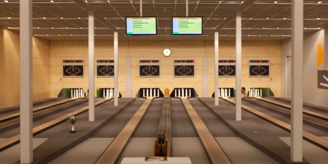

Far cry
openwereld spel er zijn er ondertussen 8 spellen van gemaakt.
Hier laat ik mijn hobby's zien
De makkelijkste manier om kegelen uit te leggen is door het te vergelijken met bowling alleen is kegelen dan met 9 kegels en op een veel dunnere baan. 
openwereld spel er zijn er ondertussen 8 spellen van gemaakt.
spel over een eeuwen oud gevecht tussen tempelieren en assassins.
in een fictieve stad waar je je eer die je kwijt geraakt terug haalt.